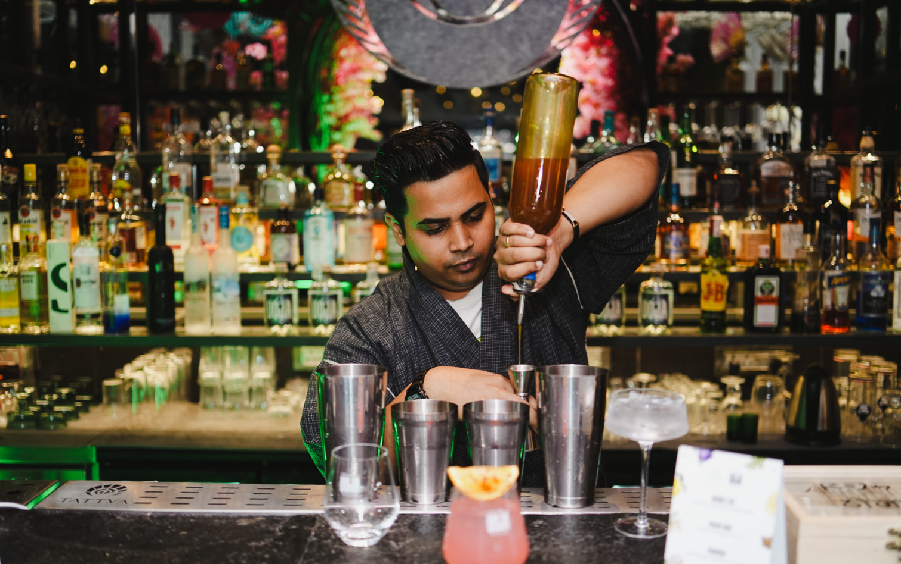

The best bar and restaurant in Andheri East is one that gets three things right at once: it's easy to reach, it fits the occasion you're showing up for, and it makes you want to come back. Andheri East isn't a single dining strip, it's a cluster of very different neighbourhoods (Marol, Chakala, MIDC, Sahar Road) each with its own crowd, price point, and personality. That's exactly why so many searches for a "good place nearby" end in disappointment: people pick a pin on the map instead of the right kind of place.
This guide breaks down what actually separates a good bar and restaurant in Andheri East from a forgettable one, maps the area's key dining pockets, compares it with Andheri West, and walks you through choosing a venue for whatever the occasion calls for, family lunch, client dinner, or a night out with friends. Along the way, we'll show you where Tattva Bar & Café fits into that picture.
What Makes a Great Bar and Restaurant in Andheri East
Not every restaurant with a bar counter qualifies as a genuine bar and restaurant in Andheri East experience. The good ones share a few traits that are easy to spot once you know what to look for, and surprisingly rare in a neighbourhood as commercially dense as this one.
Location and Connectivity Matter More Than You Think
Andheri East is one of Mumbai's busiest commercial and industrial belts, home to the MIDC industrial estate, SEEPZ, and the international airport just minutes away. That density brings a huge, constantly moving crowd of office-goers, business travellers, and residents, but it also means traffic and parking can make or break an evening. A venue that's a five-minute walk from a metro exit or has dedicated parking has a real, practical edge over one buried inside a congested lane.
The Mumbai Metro Blue Line 1 runs directly through this belt, connecting Marol Naka, Chakala, and Airport Road stations to the rest of the city. According to the Mumbai Metropolitan Region Development Authority, this corridor cut travel time between Versova and Ghatkopar from 71 minutes to just 21 minutes, which has quietly reshaped how people plan an evening out in Andheri East. A restaurant or bar within walking distance of these stations isn't just convenient, it's a genuine competitive advantage in a city where commute time dictates so many decisions.
Ambience, Concept, and the "Third Place" Factor
Sociologists call it the "third place," somewhere that isn't home or work but still feels like yours. The best bar and restaurant in Andheri East options understand this instinctively. They're not just serving food and drink, they're designing an experience: lighting that shifts from daytime brightness to evening warmth, music that matches the hour, and a layout that works equally well for a quiet two-person dinner and a ten-person celebration.
Menu depth matters too. A venue with genuinely different food and drink identities (say, comfort food, cocktails, and a dessert program that doesn't feel like an afterthought) tends to earn repeat visits far more than one relying on a single signature dish.
Mapping Andheri East's Best Dining Pockets
Treating Andheri East as one dining zone is where most guides go wrong. It actually splits into a few distinct micro-markets, and knowing which one you're heading to changes what you should expect.
Marol and the Metro Belt
Marol is arguably the heart of Andheri East's dining scene today. With the Marol Naka metro interchange now connecting the Blue Line and Aqua Line, footfall here has grown steadily, and the area has responded with a dense mix of casual bars, family restaurants, and premium dining spaces, several of them inside hotel properties along Andheri-Kurla Road. This is where you'll find a genuine bar and restaurant in Andheri East for almost every budget and mood, from quick post-work drinks to a proper sit-down dinner.
Also Read: Cafes in Marol: Discover the Perfect Spot at Tattva Bar & Cafe
Chakala and the MIDC Corridor
Chakala sits closer to the industrial and corporate core, home to large office complexes and hotel chains. Dining here skews toward business lunches, client dinners, and after-work networking. Expect slightly more formal settings, longer happy hours, and menus built to please a mixed, often international, corporate crowd.
Sahar Road and the Airport Cluster
Closest to Chhatrapati Shivaji Maharaj International Airport, this stretch caters heavily to travellers and hotel guests, with fine-dining restaurants inside international hotel chains alongside more accessible bar-restaurant combos nearby. It's the go-to zone if you're picking someone up from a flight and want a proper meal before or after.
Bar and Restaurant in Andheri East vs Andheri West: What Actually Differs
Search intent often blurs the line between these two, understandably, since they sit right next to each other and share the same PIN code prefix in most people's minds. But the on-ground experience is genuinely different.
Andheri West is Mumbai's established nightlife hub, packed with high-energy lounges, microbreweries, and late-night party spots clustered around Lokhandwala, Versova, and Four Bungalows. It's louder, trendier, and built for a younger, weekend-party crowd.
Andheri East, by contrast, is shaped by its commercial identity. A bar and restaurant in Andheri East tends to serve a more mixed audience: corporate professionals during the week, families on weekends, and travellers year-round because of the airport's proximity. The result is a scene that's slightly calmer on weeknights but every bit as capable of hosting a great night out, often with better parking, easier reservations, and less of the velvet-rope culture you'll find across the highway. If you want energy without the chaos of a Saturday night crowd fighting for table space, Andheri East is usually the smarter pick.
How to Choose the Right Bar and Restaurant in Andheri East for Your Occasion
The venue that's perfect for a Friday night with friends is rarely the right one for a client dinner. Here's how to match the occasion to the right kind of place.
Family Get-Togethers and Weekend Lunches
Look for venues with a relaxed daytime atmosphere, a kid-friendly menu, and enough space that a table of six or eight doesn't feel cramped. Buffet options and multi-cuisine menus tend to work best here, since they satisfy different palates at the same table without anyone compromising.
Corporate Happy Hours and Client Dinners
Prioritise venues with private or semi-private seating, a solid cocktail and wine list, and staff who understand a slower, conversation-first pace. Proximity to MIDC or Chakala offices saves everyone travel time after a long day, and a venue that can handle a reservation for a last-minute client meeting is worth its weight in gold.
Date Nights and Celebrations
This is where ambience earns its keep. Look for a bar and restaurant in Andheri East with distinctive interiors, a curated cocktail menu, and lighting that actually flatters the room instead of just illuminating it. A rooftop or terrace section adds a nice change of pace from the standard indoor dining room, especially through Mumbai's cooler months.
Tattva Bar & Café: A Fresh Take on Andheri East's Dining Scene
At Tattva Bar & Café, we built our entire concept around the idea that dining should feel like an experience, not just a transaction. Housed on the 7th floor of Redpine Peninsula in Andheri East, we drew inspiration from the five elements, Earth, Water, Fire, Air, and Space, to shape everything from our interiors to our drinks menu.
Our Art Deco bar (Fire), a water fountain that anchors the main dining area (Water), and an open-air section for slower afternoons (Space) are designed so that whatever mood brought you in, there's a corner of the restaurant built for it. On the menu, that same philosophy plays out through signature cocktails like Twister and Lust, alongside comfort dishes like our Creamy Mushroom Chicken Pasta and a Singapore Laksa Soup that's become a quiet favourite among regulars.
Whether you're planning a birthday celebration, a relaxed weekend brunch, or simply want to explore a genuinely different kind of bar and restaurant in Andheri East, our menu and events calendar are built to flex around what you need. If you're planning something specific, our reservations page is the fastest way to lock in a table.
If you're also looking for a top-notch bar experience, check out our guide to the best bar in Andheri for a deeper dive into what makes a great cocktail destination.
Insider Tips for a Smooth Night Out in Andheri East
- 1.Book ahead on weekends. Marol and the metro belt get busy fast after 8 PM on Fridays and Saturdays, especially near hotel properties.
- 2.Use the metro when you can. If you're travelling from South Mumbai or the western suburbs, Marol Naka and Airport Road stations put you within walking distance of most major venues, saving you from Andheri-Kurla Road traffic.
- 3.Ask about parking before you leave home. Several venues share basement or building parking that fills up quickly during peak hours; a quick call ahead avoids the frustration of circling the block.
- 4.Weeknights are underrated. If you want a calmer, more attentive experience without the weekend rush, Tuesday to Thursday evenings in this belt are consistently easier to enjoy.
- 5.Check happy hour windows. Many bar and restaurant combos in this stretch run early-evening happy hours tailored to the after-office crowd, typically the best value slot of the week.
FAQ
1. Which is the best family bar and restaurant in Andheri East?
Look for a spot with a spacious layout, a multi-cuisine menu, and a calmer daytime atmosphere. Tattva Bar & Café works well for family visits thanks to its open outdoor seating and a menu that balances comfort food with more adventurous options, so everyone at the table finds something they like.
2. Which is the best bar near Andheri East Station?
Several well-regarded bars and lounges sit within a short distance of Andheri railway station and the nearby metro interchanges, particularly along Andheri-Kurla Road and around Marol. Choose one based on the vibe you're after: livelier spots near the station itself, or slightly quieter venues a few minutes further into Marol.
3. Which is the best bar and restaurant in Andheri East near the station?
Venues clustered around Marol Naka and Airport Road metro stations offer the easiest combination of accessibility and quality, since they draw both commuters and destination diners. Tattva, located at Redpine Peninsula, is a short ride from these stations and easy to reach by car or metro.
4. Where can I find Metro Junction Family Bar and Restaurant in Andheri East?
Metro Junction Family Bar and Restaurant is a known casual dining spot located near Andheri East station, popular for its accessible pricing and family-friendly setup. It's one of several family-oriented options in the area alongside more experience-led venues like Tattva.
5. Which is the best local bar in Andheri East?
"Best" depends on what you value: nightlife energy, food quality, or ambience. For a local bar and restaurant in Andheri East that balances all three, with genuine care put into interiors, cocktails, and food rather than just drink volume, Tattva Bar & Café is built exactly for that middle ground.
Conclusion
Andheri East has quietly become one of Mumbai's most versatile dining zones, not the loudest, not the trendiest, but arguably the most practical for the widest range of occasions. Whether you're commuting in from across the city thanks to the metro's connectivity, entertaining a client near MIDC, or planning a birthday evening that needs to feel special, the right venue is out there, you just need to know which pocket of the neighbourhood to head to.
If you're looking for a bar and restaurant in Andheri East that treats every visit as an experience worth remembering, come find us at Tattva Bar & Café. Reserve your table today, or explore our full menu to plan your visit in advance.
Also, don't miss our detailed guide to the best bar in Andheri for more insights on the city's cocktail scene.